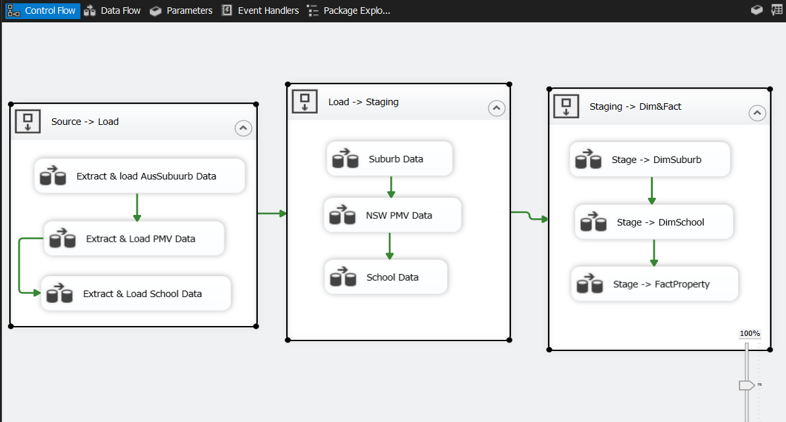

Property Analysis - Sprint 1
Designed and implemented a structured ETL pipeline using SSIS, with multi-layered data loading and transformation, following Snowflake schema principles.

End-to-End SSIS ETL Pipeline from raw source to Snowflake schema.
Project Overview
- To design and implement a structured ETL pipeline using SSIS that transforms raw property and school data into a Snowflake-modeled data warehouse, enabling accurate and efficient reporting.
- Tools Used: SQL Server | SSIS | Visual Studio
- Techniques: ETL Design, Snowflake Schema, Composite Keys, Degenerate Dimensions, Data Cleansing, Lookup Transformations
What I Did
- Extracted raw Excel files and loaded them into load_* staging tables.
- Performed initial transformations using load_* as source, and loaded results into intermediate stage_* tables.
- Applied business rules using Derived Columns (e.g., property value categorization).
- Used Lookup transformations to fetch foreign keys from dimension tables.
- Final cleaned data was loaded into Dim_* and Fact_* tables structured in a Snowflake schema.
Tables Created
- Fact table:
FactProperty - Dimension tables:
DimSuburb,DimSchool,DimDate
Key Deliverables
- Multi-layered SSIS ETL pipeline (Load → Stage → Dim/Fact).
- Composite primary key creation at staging level (Postcode + Suburb) for uniqueness.
- Property categorization using Derived Columns and Conditional Splits.
- Snowflake schema with normalized dimensions and lookup-driven relationships.
- Clean, query-ready data warehouse prepared for BI consumption.